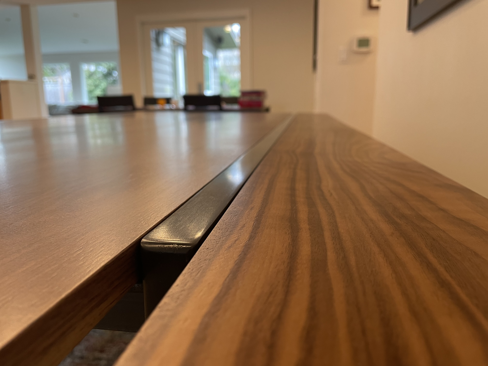

Steel and Walnut Dining Table
Coming from a family of large people, comfortable furniture is difficult to find. One winter break, I made this table to solve our qualms with the old one.

Goals
- Replace an existing table with one that is taller and longer
- Improve the stiffness of the table to reduce wobble
Methods
- Cut and welded steel tubing
- Increased wall thickness and filled legs with styrofoam grout mixture to increase stiffness
Results
- Fabricated frame with parallelism tolerance of 0.008"
- Reduced natural frequency by 40%

The wood sits proud of the steel rail by 0.005" to 0.013" to protect the steel from being scratched by plates and silverware